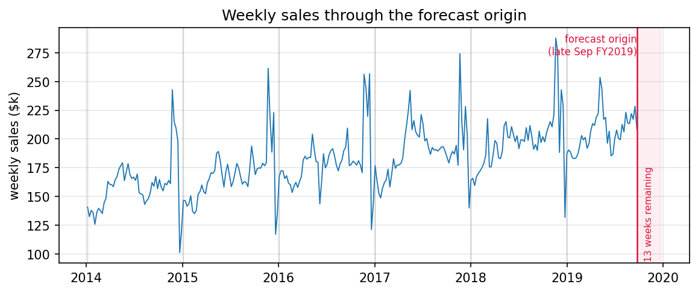

5.3 Prévision des ventes et planification par scénarios
À propos de la version française
Cette page est une traduction par IA de la version anglaise de Marketing Science in Python. La version anglaise fait foi et prévaut en cas de divergence. Le code, les notebooks et le texte intégré aux images restent en anglais. Lire la version anglaise
Nous sommes fin septembre. Les ventes progressent de 7.3 % depuis le début de l’année, mais l’objectif annuel exige 8.0 %. Il reste treize semaines, dont la période allant du Black Friday à Noël, durant laquelle cette entreprise réalise une part disproportionnée de ses ventes annuelles. L’équipe de planification doit décider si le plan actuel suffit ou si une action supplémentaire est nécessaire.
| Objectif et situation des ventes | Valeur |
|---|---|
| Ventes à ce jour (39 semaines) | $8.02M |
| Cumul annuel par rapport à l’année précédente | +7.3% |
| Semaines restantes | 13 |
| Résultat de l’année précédente | $10.30M |
| Objectif annuel | $11.12M |
| Objectif par rapport à l’année précédente | +8.0% |
Pour prendre cette décision, il nous faut deux choses : le niveau auquel les ventes aboutiront probablement avec le plan actuel, et l’ampleur avec laquelle une action marketing supplémentaire pourrait modifier ce résultat. La première est une question de prévision. La seconde est une question causale, et sa réponse vient des chapitres de ce livre consacrés à la mesure, pas de la prévision.
Trois termes portent ce chapitre. L’objectif est un seuil fixe choisi par l’entreprise. La prévision de référence porte sur les semaines restantes si le plan actuel se poursuit, avec les promotions récurrentes, les prix et les actions médias qui ont façonné l’historique. L’incrément est ce qu’une action marketing supplémentaire ajoute à cette référence. Pour un scénario \(s\), le résultat de fin d’année est
\[ Y^{(s)}_{\text{year-end}} = Y_{\text{so far}} + R_{\text{baseline}} + \Delta_s \]
les ventes à ce jour, plus la prévision de référence des semaines restantes, plus l’incrément causé par le scénario.

La série est générée par l’auteur : six exercices de 52 semaines de chiffre d’affaires hebdomadaire du commerce électronique sur le calendrier réel de 2014 à 2019. L’ampleur des pics de fêtes varie d’une année à l’autre, et l’effet de campagne a une taille réelle connue.
Notebook d’accompagnement : sec5.3_sales_forecasting.ipynb reproduit tous les chiffres et toutes les figures de ce chapitre (les deux schémas conceptuels proviennent de regenerate_sec5_3_figures.py).
Voir sur GitHub
Construire et valider la référence
Avec des ventes en hausse de 7.3 % sur un an, il est tentant d’appliquer ce taux de croissance au total de l’année précédente et d’appeler cela une prévision. Ce raccourci ne fonctionne que si la tendance se poursuit et si le dernier trimestre ressemble à celui de l’année précédente. Le trimestre des fêtes est précisément celui où ces deux hypothèses cessent de tenir : le pic est important et son ampleur varie d’une année à l’autre. Le trimestre ne se termine pas non plus au sommet du pic. Une fois passée la date limite d’expédition, les ventes de la semaine de Noël chutent fortement, et cette semaine correspond à la semaine 51 de l’exercice certaines années et à la semaine 52 d’autres années.

Il nous faut donc un modèle pour les semaines restantes. Deux références fixent le niveau minimal, et quatre candidats les affrontent sur le même historique.
- Méthode naïve. Répéter la dernière semaine observée. Elle est aveugle à la saison qui s’annonce.
- Méthode naïve saisonnière. Répéter la même semaine de l’exercice précédent. C’est « appliquer le profil de l’année dernière » rendu explicite.
- ETS (lissage exponentiel). Niveau, tendance et saisonnalité comme composantes explicites, dans deux versions, avec et sans le terme saisonnier de 52 semaines.
- Prophet. Une tendance changeante, une saisonnalité annuelle et des effets calendaires, ajustés comme des composantes additives distinctes.
- LightGBM sur des variables retardées, avec la semaine de l’exercice et le calendrier des fêtes et des promotions en entrée. Un comparateur fixe, légèrement régularisé, et non un modèle de production dont les hyperparamètres auraient été optimisés.
- TimesFM 2.5. Un modèle de fondation préentraîné, utilisé sans apprentissage sur la série : aucun ajustement, uniquement l’historique des ventes.

from statsmodels.tsa.exponential_smoothing.ets import ETSModel
def fit_ets(train, seasonal=None):
model = ETSModel(
pd.Series(np.log(train)),
error="add", trend="add", damped_trend=True,
seasonal=seasonal, seasonal_periods=52 if seasonal else None,
)
return model.fit(disp=False)Les sept trajectoires divergent fortement au niveau du pic, et rien dans le graphique ne dit laquelle croire. Le candidat qui bat les références lors d’un test rétrospectif devient la prévision de référence. La popularité ou la nouveauté ne suffisent pas à qualifier un modèle.
Valider par un test rétrospectif à origine glissante
L’approche habituelle consiste à répartir aléatoirement les données entre apprentissage et test. Sur ces données, elle donne à LightGBM une WAPE de 4.5 %. Ce chiffre est trompeur pour deux raisons. Le mélange permet au modèle d’apprendre sur des semaines postérieures à celles qu’il prévoit et, avec des variables retardées, la plupart des lignes de test ont des semaines adjacentes dans l’ensemble d’apprentissage. Et une répartition aléatoire évalue une interpolation ligne par ligne : elle ne peut même pas produire l’objet dont la décision a besoin, une trajectoire de 13 semaines à partir d’une origine fixe.
La règle est que chaque modèle n’utilise que l’information disponible à l’origine de la prévision, et que chaque prévision historique utilisée pour l’évaluation respecte cette même règle. Un test rétrospectif à origine glissante l’impose, et le calendrier des exercices rend ici son application nette. Chaque année suit la même structure de 52 semaines ; la décision à laquelle nous faisons face, prévoir la fin d’année depuis fin septembre, peut donc être rejouée au même moment des exercices FY2016, FY2017 et FY2018. FY2015 dispose de trop peu d’historique pour estimer une saison de 52 semaines. Cela donne trois répétitions de la question.

HORIZON = 13
SEPT_ORIGINS = [143, 195, 247] # end of fiscal week 39, FY2016..FY2018
for origin in SEPT_ORIGINS:
train = y[:origin] # nothing after the origin, for any model
actual = y[origin:origin + HORIZON]
for name, forecast in fit_all_models(train, HORIZON).items():
score(name, origin, actual, forecast)Deux indicateurs ponctuels suffisent pour comparer les modèles. La WAPE hebdomadaire, \(\sum_t |y_t - \hat y_t| / \sum_t |y_t|\), est l’erreur que reconnaît un planificateur. La question de fin d’année dépend de l’erreur signée sur le total des 13 semaines, car les erreurs hebdomadaires se compensent en partie dans la somme trimestrielle. Une réserve avant le tableau. Prophet et LightGBM reçoivent le calendrier des fêtes et des promotions, et TimesFM reçoit uniquement l’historique des ventes. La série est également synthétique, construite sur un cycle de 52 semaines, soit la forme qu’un ETS saisonnier est conçu pour ajuster.
| Modèle | WAPE hebdomadaire | Erreur sur le total des 13 semaines | Biais |
|---|---|---|---|
| Méthode naïve | 13.2% | 6.8% | -6.8% |
| Méthode naïve saisonnière | 8.6% | 5.5% | -5.5% |
| ETS, niveau + tendance | 13.3% | 4.7% | -4.7% |
| ETS, niveau + tendance + saisonnalité | 7.4% | 2.6% | -1.3% |
| LightGBM, retards + calendrier | 12.3% | 5.7% | -5.7% |
| Prophet, régresseurs calendaires | 10.5% | 5.3% | +1.8% |
| TimesFM 2.5, sans apprentissage sur la série | 10.8% | 2.6% | -1.5% |
La saisonnalité détermine le trimestre. L’ETS saisonnier présente l’erreur la plus faible dans les deux colonnes et devient la référence. C’est aussi le seul candidat ici dont le modèle ajusté peut simuler de nombreuses trajectoires de 13 semaines avec leur incertitude, ce dont l’étape suivante a besoin. TimesFM l’a égalé sur le total des 13 semaines avec pour seule entrée la série brute. Prophet a à peine amélioré le total des 13 semaines de la méthode naïve saisonnière, car sa saison annuelle suit un cycle de 365.25 jours alors que cette entreprise planifie sur des années fixes de 52 semaines. Sur une seule série synthétique, aucun de ces deux résultats ne classe les méthodes. La ligne LightGBM porte la leçon de validation : 12.3 % à origine glissante contre 4.5 % avec la répartition aléatoire, c’est la taille de la fuite d’information.
La probabilité d’atteindre l’objectif
Passons maintenant à l’application au présent de la procédure que le test rétrospectif vient de valider. Ajustez l’ETS saisonnier sur toutes les données jusqu’à fin septembre, simulez 5 000 trajectoires complètes de 13 semaines et ajoutez le total de chacune aux $8.02M de ventes déjà réalisées.
result = fit_ets(y[:LIVE_ORIGIN], seasonal="add")
paths = simulate_paths(result, h=13, repetitions=5000) # centered residual bootstrap
year_end = sales_so_far + paths.sum(axis=0) # one total per path
p10, p50, p90 = np.percentile(year_end, [10, 50, 90])
p_hit = (year_end >= target).mean()Les erreurs de prévision hebdomadaires sont corrélées sur l’horizon et les quantiles ne s’additionnent pas ; c’est pourquoi le code simule des trajectoires complètes et calcule la somme de chacune au lieu d’empiler les quantiles hebdomadaires.

La prévision médiane de fin d’année est de $10.91M, avec un intervalle à 80 % allant de $10.79M à $11.05M. La médiane est ce qui figure généralement dans les présentations, mais ce n’est pas un engagement. L’objectif de $11.12M se situe juste au-dessus du P90 : la probabilité de l’atteindre avec le plan actuel est donc de 4 %. Ce n’est pas impossible, mais c’est clairement peu probable, et l’équipe dispose désormais d’un chiffre pour quantifier à quel point.
Les 4 % proviennent d’une distribution simulée ; celle-ci mérite donc sa propre vérification, sur la grandeur qui guide notre décision : le total des 13 semaines. La vérification consiste à rejouer la même procédure à des origines passées et à examiner si le total réalisé se situe dans la bande à 80 %. Sur 15 fenêtres de 13 semaines sans chevauchement, cela s’est produit 12 fois, soit un résultat proche du taux nominal de 80 %, et les trois répétitions de septembre ont donné une couverture de 2 sur 3. Cela étaye la dispersion de la bande, pas sa queue : l’objectif se situe au-delà du P90, là où 15 fenêtres ne permettent pas de certifier un chiffre aussi faible que 4 %. Lisez la réponse comme quelques pour cent, et planifiez sur la base de « clairement peu probable » plutôt que de 4.0 %.
Les scénarios marketing exigent des incréments mesurés
La distribution de référence indique où le plan actuel a des chances d’aboutir. La question suivante, dans toutes les réunions de planification, est de savoir si une campagne supplémentaire changerait la réponse.
L’an dernier, les semaines de promotion des fêtes ont enregistré des ventes supérieures d’environ 22 % à celles des semaines voisines ; il est donc tentant d’inscrire +22 % pour une campagne supplémentaire. Cet écart n’est pas un effet de campagne. Les promotions sont programmées pendant les semaines les plus fortes : une partie des 22 % relève donc de la saisonnalité. La référence intègre déjà l’effet moyen des promotions récurrentes : l’essentiel du reste figure donc déjà dans la prévision. Ce qui subsiste mêle l’effet de la promotion et tout ce que le modèle a manqué. Une prévision indique ce qui va probablement se passer, pas ce qui s’est produit grâce au marketing. Ainsi, \(\Delta_s\) provient de l’extérieur de la prévision, et il exige deux éléments avant de pouvoir entrer dans la simulation : une condition de référence, c’est-à-dire ce par rapport à quoi il constitue un supplément, et une distribution d’incertitude.
| Scénario | Incrément | Origine du chiffre |
|---|---|---|
| Plan actuel (référence) | 0 | la prévision de référence |
| Campagne supplémentaire pour les fêtes | +8 % sur les quatre semaines de campagne (erreur-type de 2.5 points) | une expérimentation géographique (Section 6.3) ou une analyse d’impact causal (Section 3.4) portant sur la campagne de l’année précédente |
| Investissement média supplémentaire | +$60k sur le trimestre (erreur-type de $25k) | une courbe de réponse d’un MMM calibré (Section 6.2, Section 6.4) |
Ces incréments sont des valeurs illustratives présentées sous la forme de mesures réelles. Renseignez chaque ligne à partir du chapitre pertinent, ou omettez-la ; une source bayésienne, comme un MMM calibré, peut fournir directement des tirages de la distribution a posteriori.
Les unités comptent lorsqu’un incrément entre dans la simulation. L’effet de campagne est relatif : il multiplie les ventes des semaines de campagne propres à chaque trajectoire ; une saison des fêtes forte génère donc un gain en dollars proportionnellement plus élevé. L’effet média arrive en dollars et s’ajoute directement.
beta = rng.normal(0.08, 0.025, size=n_paths) # campaign lift per path
campaign_base = paths[CAMPAIGN_STEPS, :].sum(axis=0)
year_end_campaign = sales_so_far + paths.sum(axis=0) + beta * campaign_base
media = rng.normal(60_000, 25_000, size=n_paths) # dollars over the quarter
year_end_media = sales_so_far + paths.sum(axis=0) + media| Scénario | P10 | P50 | P90 | P(atteindre l’objectif) | Interprétation |
|---|---|---|---|---|---|
| Plan actuel (référence) | $10.79M | $10.91M | $11.05M | 4% | Peu probable |
| Campagne supplémentaire pour les fêtes | $10.87M | $11.00M | $11.14M | 13% | Plus de chances, mais toujours peu probable |
| Investissement média supplémentaire | $10.85M | $10.97M | $11.11M | 8% | Utile, mais insuffisant à lui seul |

La campagne fait passer la médiane de $10.91M à $11.00M. Le tableau présente simultanément l’amélioration des chances et l’écart qui subsiste, ce qu’une prévision ponctuelle ne peut pas faire.
De la prévision à la décision
La même simulation répond à la question inverse : de combien le trimestre devrait-il dépasser la médiane de référence, et quelque chose de comparable s’est-il déjà produit ?
| Comparaison | Hausse par rapport au trimestre de référence |
|---|---|
| Nécessaire pour atteindre l’objectif | +7.2% |
| Plus grand dépassement de la prévision de septembre | +6.0% |
| Incrément de campagne (médiane) | +3.0% |
| Incrément média (médiane) | +2.1% |
Atteindre l’objectif exige un trimestre supérieur de 7.2 % à la médiane de référence. Aucune des trois répétitions de septembre ne s’en est approchée ; le plus grand dépassement était de 6.0 %, et même les deux incréments réunis ajoutent environ 5 %. La campagne fait passer les chances de 4 % à 13 %, mais l’objectif reste peu probable.
L’équipe a désormais un choix à faire : investir davantage, modifier le plan d’exploitation, ou revoir ses attentes. Quelle que soit l’option retenue, l’écart est un chiffre autour duquel elle peut planifier dès septembre. Il repose sur une référence validée à l’horizon utilisé pour la décision, et sur des incréments mesurés en dehors de la prévision.
Points clés à retenir
- Validez la référence à l’horizon et au point du calendrier utilisés pour la décision, avec uniquement l’information disponible à chaque origine. Une répartition aléatoire répond à une autre question.
- Décidez à partir de la distribution, pas du point. Simuler des trajectoires complètes sur l’horizon transforme une prévision médiane en une probabilité de 4 % d’atteindre l’objectif, à lire comme quelques pour cent, pas comme une fréquence précise.
- Un scénario est la référence augmentée d’un incrément mesuré séparément, chacun avec une condition de référence et une incertitude. Les ventes des semaines de promotion ne sont pas un incrément.